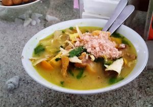
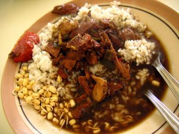
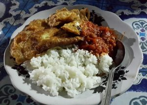
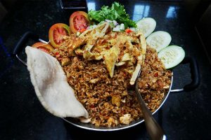
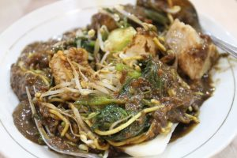
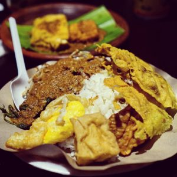
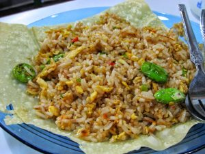
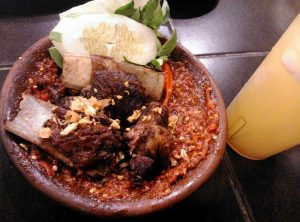
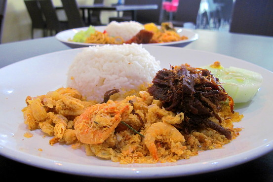
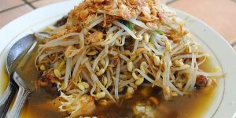

1. Soto Ayam Cak Har
Tidak jauh dari ITS, Anda bisa menemukan tempat wisata kuliner Surabaya yang terkenal. Tak hanya untuk kalangan mahasiswa, pengunjung dari berbagai kalangan juga datang berbondong-bondong ke Jalan dr. Ir. H. Sokearno (Merr) Surabaya untuk menikmati kuliner Surabaya yang satu ini. Pasalnya, soto ayam yang dihidangkan selalu berhasil membuat ketagihan dan ramah kantong dengan harga hanya sekitar Rp20.000,00-an.

2. Rawon Setan Mbak Endang
Rawon Setan Mbak Endang yang ada di Jalan Embong Malang, Surabaya inilah depot rawon setan yang asli dan pertama di Indonesia. Umumnya, aneka kuliner yang diberi embel-embel kata setan adalah karena tingkat kepedasan yang ditawarkan. Namun bukan itu alasan mengapa rawon yang satu ini dinamakan demikian. Asal usul kata setan ini adalah karena dulunya Rawon Setan baru buka saat malam hari, yakni mulai pukul 22.00 WIB hingga dini hari, identik dengan munculnya setan pada malam hari. Kini, Rawon Setan sudah buka sejak pagi. Selain daging dengan kuah khas rawon, Anda bisa menambah lauk lainnya seperti telur asin, perkedel kentang, tempe, atau empal. Harga untuk seporsi rawon setan ini mulai dari Rp25.000,00.

3. Sego Sambel Wonokromo Mak YEYE
Jika Anda pencinta kuliner pedas dan merasa lapar saat malam hari, datanglah ke Jalan Jagir Wonokromo Wetan no. 12, Jagir, Wonokromo, Surabaya. Menyantap makanan saat malam hari di warung Sego Sambel Wonokromo Mak Yeye, akan menjadikan pengalaman kuliner Anda di Kota Pahlawan semakin berkesan. Buka mulai pukul 22.00-04.00 WIB, Anda harus rela mengantre untuk mendapatkan kelezatan sajian di warung ini. Menunya boleh jadi sederhana, tetapi urusan rasa, Sego Sambel Mak Yeye memang jawara. Nasi hangat dengan lauk iwak pe alias ikan pari yang dibaluri sambal merah menyala dan menantang, bisa-bisa membuat Anda ketagihan. Jika tak ingin iwak pe, ada juga beragam lauk sederhana lainnya. Dengan harga murah mulai dari Rp10.000,00, Anda akan mendapat dua kebahagiaan sekaligus: kenyang dan puas. Pasalnya, porsi yang diberikan cukup melimpah.

4. Nasi Goreng Jancok
Jika ada satu kata yang akan mengingatkan orang-orang akan Surabaya, maka kata terakhir pada tempat wisata kuliner Surabaya yang satu ini adalah kata yang tepat. Meski Anda bisa mendapatkan nasi goreng di mana saja, Nasi Goreng Jancuk adalah destinasi kuliner Surabaya yang tidak bisa Anda lewatkan begitu saja ketika berada di kota ini. Asal muasal nama ini juga bisa dikatakan spontan. Konon, Nasi Goreng Jancuk berasal dari umpatan pelanggan setelah mencicipi sajian ini. Koki yang membuat menu ini untuk teman-temannya sengaja menambahkan cabai rawit dengan jumlah yang banyak dan ketika sendok pertama nasi goreng ini sampai di lidah teman-teman si koki, spontan mereka mengumpat, “Jancuk! Pedes, Cuk!” Jika ingin menikmati nasi goreng khas Surabaya ini, ada baiknya Anda ditemani beberapa orang. Porsinya cukup banyak, cukup untuk sekitar empat sampai lima orang. Dengan harga sekitar Rp150.000,00 per porsi, Anda bisa mendapatkan Nasi Goreng Jancuk di Hotel Surabaya Suites.

5. Rujak Cingur Delta
Satu lagi jenis kuliner Surabaya yang memang benar-benar berasal dari Surabaya dan tidak boleh Anda lewatkan: rujak cingur. Bahan makanan yang ada di dalam kuliner ini biasanya berupa kacang panjang, lontong, tahu, tempe, kangkung, taoge, mangga muda, nanas, kedondong, dan tentu saja cingur. Bahan-bahan ini kemudian disiram dengan bumbu yang terbuat dari campuran petis udang, cabai, kacang tanah, dan air matang. Sebagai pelengkap, taburan bawang goreng akan diberikan di atasnya. Di Surabaya, Anda bisa pergi ke Rujak Cingur Delta untuk menikmati kuliner ini. Tempat ini cukup legendaris dan sudah ada sejak lebih dari dua dekade yang lalu. Letaknya di Jalan Kayon Blok D no. 46 Embong Kemiri, Surabaya. Dan sebagaimana tempat makan legendaris lainnya, resep di Rujak Cingur Delta ini pun merupakan resep turun-temurun. Harga yang diberikan untuk sepori rujak cingur adalah sekitar Rp30.000,00. Namun bila Anda datang bersama kerabat atau karib yang tidak terlalu menyukai rujak cingur, tidak perlu khawatir karena ada pilihan menu lain di sini seperti misalnya nasi campur, lontong cap go meh, dan lain-lain.

6. Pakuwon Food Festival
Jika Anda ingin mencicipi aneka kuliner tanpa harus berpindah dari satu tempat ke tempat lain, kunjungilah Pakuwon Food Festival. Lokasinya berada di Jalan Kejawan Putih Mutiara X, Mulyorejo, Surabaya. Dibuka mulai pukul 17.00 sampai 24.00, ada sekitar 100 stand makanan yang tersedia di tempat wisata kuliner Surabaya ini. Variasi yang ditawarkan pun cukup beragam, mulai dari makanan tradisional Jawa Timur hingga makanan internasional, juga termasuk dessert. Bagi Anda yang datang bersama si kecil pun tak perlu khawatir sebab di Pakuwon Food Festival juga tersedia beragam wahana untuk mereka mainkan.

7. G-Walk
Taman Gapura Walkway alias G-Walk adalah sebuah kawasan kuliner Surabaya yang sudah berdiri sejak tahun 2005 silam. Tempatnya sendiri berada di dalam wilayah perumahan Citraland yang tak lain merupakan replika Singapura di Surabaya. G-Walk ramai dikunjungi oleh pengunjung yang tidak hanya berasal dari perumahan Citraland, terutama pada akhir pekan. Restoran dan kafe yang ada di tempat kuliner Surabaya ini akan dijejali pengunjung yang kian banyak saat hari semakin malam. Meski berada di kawasan elite, nyatanya harga yang ditawarkan oleh paran tenan sangat terjangkau. Selain itu, pengunjung pun juga tidak akan terganggu dengan adanya pengamen maupun pengemis.

8. Warung Leko
Tempat wisata kuliner Surabaya yang satu ini cocok bagi para penggemar iga. Warung Leko memang sudah terkenal karena nikmatnya olahan iga yang ditawarkan. Maka dari itu, tak heran bila tempat makan ini tak pernah sepi pengunjung baik yang berasal dari dalam maupun luar kota. Warung Leko beralamat di Jalan Manyar Kertoajo V/9 Gubeng, Surabaya. Beberapa menu yang sering menjadi pesanan antara lain iga penyet, sop iga, iga goreng tepung, dan babat penyet. Daging yang disajikannya sangat empuk, sehingga Anda juga akan nyaman menikmatinya. Pilihan sambalnya pun dapat disesuaikan selera, mulai dari yang tidak pedas, sedang sampai ekstra pedas. Selain iga dan babat, Warung Leko juga menyediakan menu alternatif. Ada tempe penyet, bandeng penyet, otot penyet, dan masih banyak lainnya. Soal harga pun Anda tak perlu khawatir. Di rumah makan ini, sajian yang ditawarkan mulai dari harga Rp8.000,00 sampai Rp60.000,00.

9. Depot Bu Rudy
Datanglah ke Depot Bu Rudy ketika berada di Surabaya. Menu yang disediakan tempat kuliner Surabaya ini sangat beragam, tetapi cobalah untuk membuktikan sendiri kenikmatan seporsi nasi udang empal yang menjadi andalan di sini. Nasi pulen hangat disajikan bersama dengan udang tepung goreng yang renyah, empal yang empuk dengan bumbu meresap, dan sambal bawang Bu Rudy yang termashyur. Nasi udang empal Bu Rudy dibanderol sekitar Rp20.000,00an saja. Selain makanan, di depot Bu Rudy yang berlokasi di Jalan Dharmahusada no. 140 Surabaya ini juga dilengkapi tempat oleh-oleh khas Surabaya. Begitu melewati pintu masuk, Anda akan disambut dengan jejeran beraneka ragam oleh-oleh, namun jika ingin membeli oleh-oleh paling khas dari Depot Bu Rudy, Anda bisa membeli sambal bawang, sambal terasi, atau sambal ikan peda dalam kemasan.

10. Lontong Balap Garuda Pak Gendut
Jika Anda benar-benar mencari kuliner yang khas dari Surabaya, lontong balap adalah jawabannya. Kuliner nusantara yang satu ini terdiri dari lontong, tahu goreng, taoge, lentho, bawang goreng, kecap, dan sambal dipadu kuah segar. Apalagi ditambah dengan lezatnya sate kerang dan segelas es kelapa muda. Ada banyak tempat yang menyajikan kuliner khas Surabaya ini. Namun jika Anda tidak ingin mencoba-coba dan kecewa, datanglah ke Lontong Balap Garuda Pak Gendut. Lokasinya berada di depan bekas Bioskop Garuda, tepatnya di Jalan Kranggan no. 60, Sawahan, Surabaya. Meski telah berjalan selama lebih dari empat dekade, kualitas lontong balap yang bisa Anda nikmati dengan harga Rp12.000,00 untuk setiap porsinya ini tetap terjaga. Dengan cara memasak dan bumbu yang menjadi warisan keluarga, tak heran penikmat Lontong Balap Pak Gendut semakin banyak.
